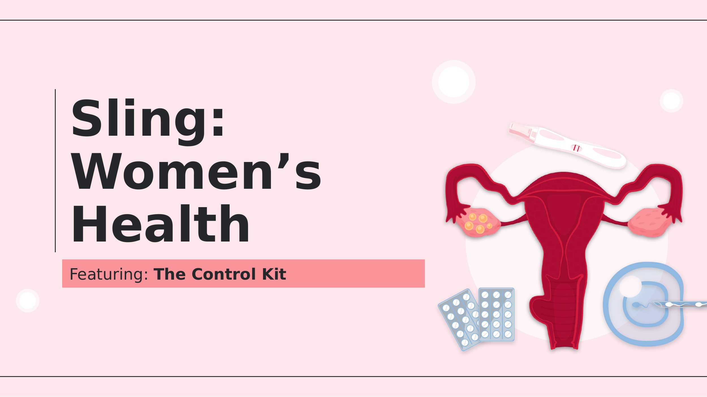
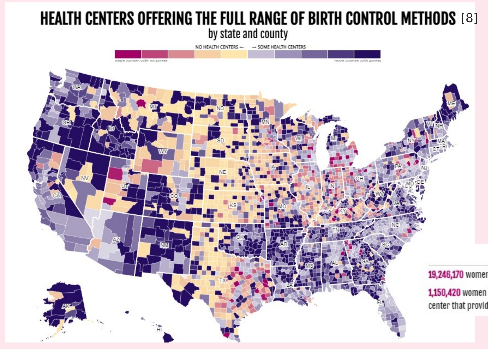
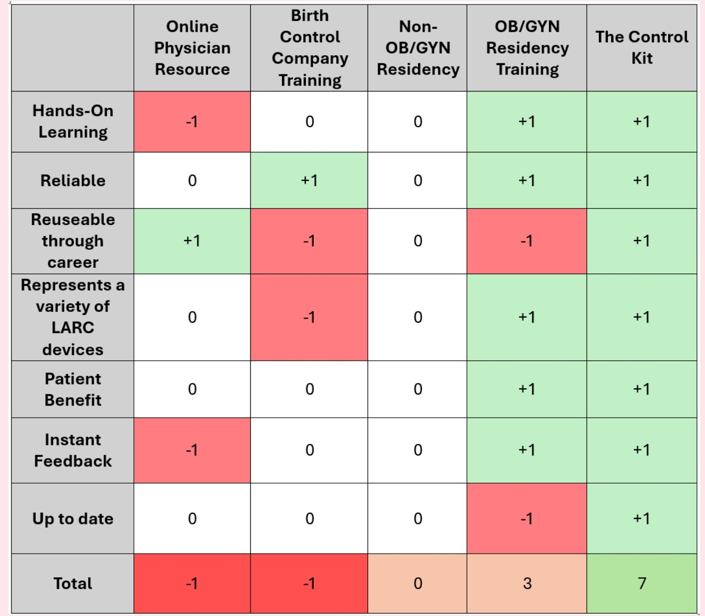
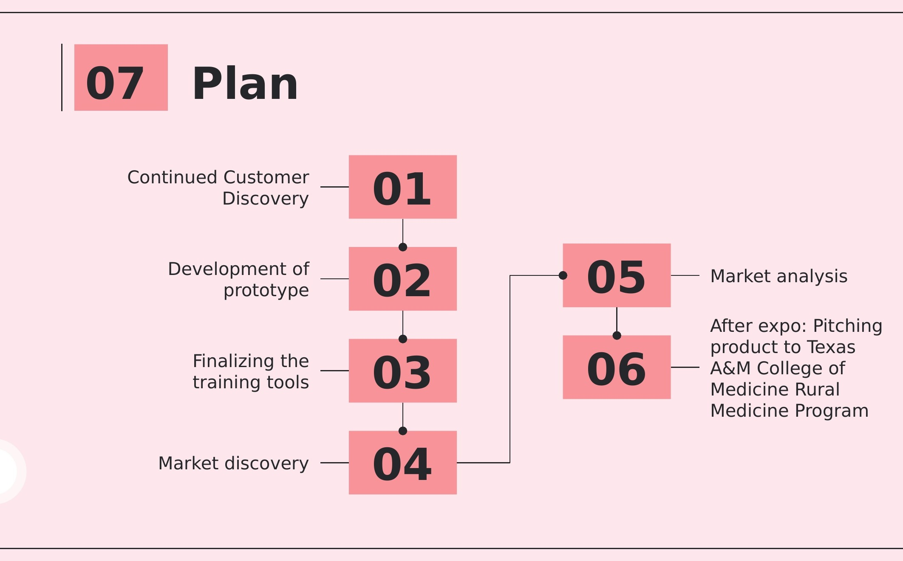
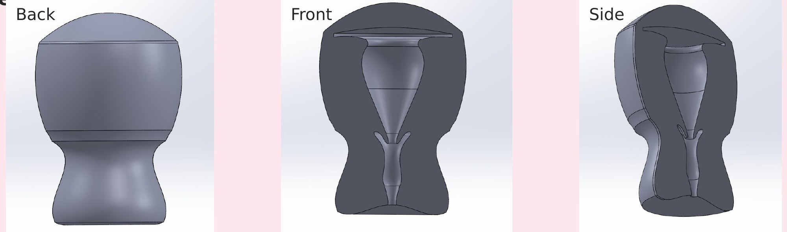
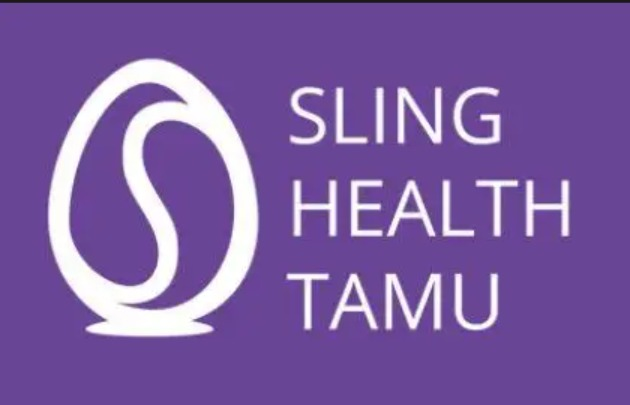

Lack of awareness and training around Long-Acting Reversible Contraception (LARC) negatively impacts uptake and accessibility, especially in rural, low-income areas. Most patients find IUD insertion "severely painful," yet pain management for gynecological procedures isn't taught in OB/GYN rotations, and providers receive little training on detecting malpositioning.

This map, from Power to Decide, shows just how uneven access already is before training even enters the picture: an estimated 19.2 million women in need live in a "contraceptive desert," and over 1.1 million live in a county without a single health center offering the full range of methods. Darker purple counties have more provider access; the pink and tan counties, concentrated heavily across the South and rural Midwest, are where women have the least.
Training gaps compound directly on top of this access gap: even where a clinic exists, if the provider isn't confident inserting an IUD or implant, that "access" doesn't actually translate into a patient getting the method she wants.
Lack of awareness and training surrounding Long Acting Reversible Contraception negatively impacts uptake and accessibility, particularly in rural, low-income areas.
The Control Kit, Problem StatementRan customer discovery across five pain points, access, awareness, misconceptions, education, and comfort, surfacing that clinicians often spend 30–45 minutes per visit just correcting patient misconceptions, and that rural, low-income areas see especially low uptake of birth control implants due to a shortage of trained providers. Fighting misinformation spread on social media came up repeatedly as its own distinct challenge, separate from clinical training gaps.
To size and prioritize the opportunity, we mapped out who actually needs this and who would adopt it first:
We also benchmarked ourselves directly against the existing ways providers currently get LARC training, scoring each option against what actually matters clinically, hands-on learning, reliability, reusability, patient benefit, instant feedback, and staying current with eligibility guidelines.

The Control Kit scored a +7 total, the highest of any option, and the only one that scored positively across every single criterion. OB/GYN residency training came closest at +3, but even that loses points for not staying up to date and not being reusable across a provider's whole career. Everything else, online physician resources, birth control company training, non-OB/GYN residency, actually scored negative or flat overall, meaning none of the training a typical provider actually has access to is even reliably better than doing nothing.
With the problem and the competitive gap both mapped out, this is the roadmap we set for actually building and validating the solution:

Designed The Control Kit, reusable insertion/removal practice models (with an agarose-hydrogel-lined uterine cavity to simulate real pressure points), educational pamphlets for patients and providers, and competency checklists, paired with an online resource offering scenario-based practice consistent with updated eligibility guidelines and a forum for addressing misconceptions.

The practice model itself is built to be handled repeatedly without wearing out: the uterine cavity is lined with an agarose hydrogel so a provider can actually feel realistic pressure points during insertion, rather than practicing on rigid plastic that doesn't behave anything like real tissue.
Unique value proposition: offering continual and updated practice inserting different types of birth control, with educational materials on each type, not a one-time training session that goes stale the moment guidelines change.
To get this into providers' hands, we modeled two straightforward revenue paths and a deliberate rollout sequence:
Training kits sold directly to clinics, medical schools, and health centers as a durable, reusable resource.
Ongoing access to the online resource, scenario practice and updated eligibility content, kept current over time.
Launch focused in urban centers first, then expand into rural and international markets where the training gap is widest.
Modeled on published results from similar training interventions, closing the LARC training gap moves real clinical numbers, not just comfort scores:
Positioned initially for urban clinics, medical schools, and family planning centers, with a rural and global expansion path from there.

The Control Kit was built through Sling Health TAMU, the Texas A&M chapter of Sling Health, a national, student-run medtech incubator founded in 2013 that has since grown into the country's largest student-oriented med-tech accelerator, with alumni startups going on to raise more than $220 million.
The TAMU chapter, launched in 2019, pairs engineering, medical, and business students together in interdisciplinary teams for two full semesters, working directly with clinicians to surface real unmet needs and turn them into functional prototypes, with funding, lab space, and mentorship provided along the way. Every team's cycle ends at Demo Day, presenting finished work to judges, investors, and the public.
The full 24-slide presentation, including customer discovery, competitive landscape, and go-to-market plan.